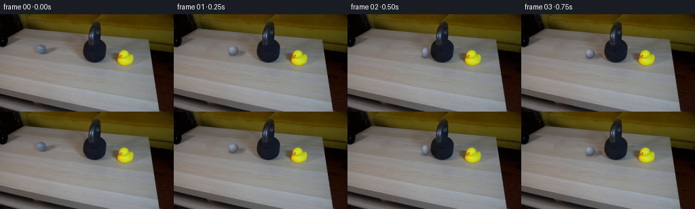
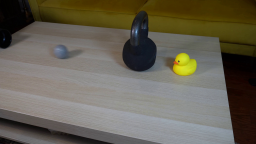
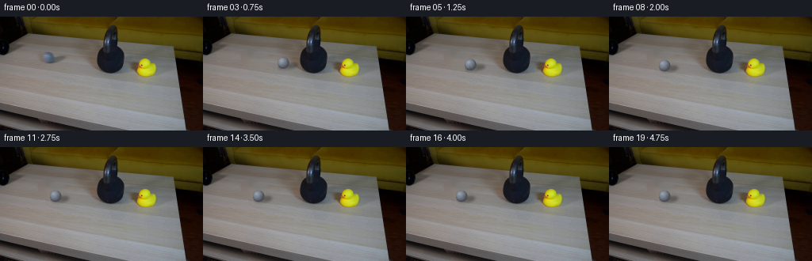

CODING AGENTS AS PIXEL WORLD MODELS
traex/GPT-5.6-Sol · 0198
点击播放 · 原生 RGB 像素
逐轮保存的候选
回放视频、检查图与代码变化。
每份候选均可单独播放。实际图片检查记录在下方工具轨迹中。
候选 01播放与检查图
点击播放 · 原生 RGB 像素


展开代码变化
--- 上一保存版本
+++ 本次保存版本
@@ -0,0 +1,149 @@
+from pathlib import Path
+import cv2
+import numpy as np
+from PIL import Image
+import artifact_io
+
+# PixelWorld case: a locked camera, a grey tennis ball, and a very heavy bell.
+# Everything is generated deterministically from the supplied first frame.
+CASE_DIR = Path(__file__).resolve().parent
+S = 4 # antialiasing supersample
+W, H = 256, 144
+
+
+def remove_starting_ball(rgb):
+ """Remove the frame-0 ball and its cast shadow, preserving the wood grain."""
+ bgr = cv2.cvtColor(rgb, cv2.COLOR_RGB2BGR)
+ mask = np.zeros((H, W), np.uint8)
+ # Ball, soft fringe, and its rightward cast shadow.
+ cv2.ellipse(mask, (60, 51), (10, 11), 0, 0, 360, 255, -1)
+ cv2.ellipse(mask, (70, 54), (15, 7), -8, 0, 360, 255, -1)
+ # Telea produces a good local interpolation; restore subtle grain using a
+ # same-row interpolation from both sides of the small removed region.
+ cleaned = cv2.inpaint(bgr, mask, 4, cv2.INPAINT_TELEA)
+ return cv2.cvtColor(cleaned, cv2.COLOR_BGR2RGB)
+
+
+def alpha_over(dst, src, alpha):
+ a = alpha[..., None].astype(np.float32)
+ return np.clip(src.astype(np.float32) * a + dst.astype(np.float32) * (1-a), 0, 255).astype(np.uint8)
+
+
+def render_shadow(canvas, cx, cy, speed=0.0, squash=1.0):
+ """Soft cast/contact shadow, extending down-right as in frame zero."""
+ h, w = canvas.shape[:2]
+ layer = np.zeros((h, w), np.float32)
+ # Fixed illumination: broad rightward cast shadow and a tight contact core.
+ center = (int(round((cx + 6.0) * S)), int(round((cy + 4.0) * S)))
+ axes = (int(round((11.5 + min(speed, 30) * .04) * S)), int(round(4.0 * squash * S)))
+ cv2.ellipse(layer, center, axes, -8, 0, 360, .31, -1, cv2.LINE_AA)
+ cv2.ellipse(layer, (int(round((cx+2.2)*S)), int(round((cy+5.4)*S))),
+ (int(6.7*S), int(max(1.8, 2.5*squash)*S)), 0, 0, 360, .23, -1, cv2.LINE_AA)
+ layer = cv2.GaussianBlur(layer, (0, 0), 1.55*S)
+ dark = canvas.astype(np.float32)
+ dark *= (1.0 - layer[..., None])
+ return np.clip(dark, 0, 255).astype(np.uint8)
+
+
+def render_ball(canvas, cx, cy, roll_angle, squash_x=1.0, squash_y=1.0, blur_speed=0.0):
+ """Render a fuzzy, shaded grey tennis ball with a subdued rotating seam."""
+ hh, ww = canvas.shape[:2]
+ yy, xx = np.mgrid[0:hh, 0:ww].astype(np.float32)
+ X = (xx / S - cx) / squash_x
+ Y = (yy / S - cy) / squash_y
+ r = np.sqrt(X*X + Y*Y)
+ R = 7.15
+
+ # A soft fibrous edge rather than a hard graphic disk.
+ alpha = np.clip((R + .65 - r) / 1.15, 0, 1)
+ alpha = alpha * alpha * (3 - 2*alpha)
+
+ nx = X / R
+ ny = Y / R
+ inside = np.maximum(0.0, 1.0 - nx*nx - ny*ny)
+ nz = np.sqrt(inside)
+ # Broad light is upper-left/front, matching the source frame.
+ light = np.maximum(0, -.48*nx - .55*ny + .68*nz)
+ rim = np.clip(1.0 - nz, 0, 1)
+ shade = .47 + .43*light - .12*rim + .05*nz
+
+ # Stable fine felt texture in object coordinates; it rotates as the ball rolls.
+ c, s = np.cos(roll_angle), np.sin(roll_angle)
+ tx = c*X + s*Y
+ ty = -s*X + c*Y
+ fuzz = (np.sin(tx*3.1 + ty*1.7) + np.sin(tx*5.9 - ty*2.3) + np.sin(ty*7.1)) / 3.0
+ shade += .025*fuzz
+
+ base = np.empty((hh, ww, 3), np.float32)
+ base[..., 0] = 128*shade + 19
+ base[..., 1] = 137*shade + 19
+ base[..., 2] = 151*shade + 20
+
+ # Grey tennis-ball curved seam: very subtle at this resolution.
+ seam_coord = (tx + .10*ty*ty - 1.15)
+ seam = np.exp(-(seam_coord/.33)**2) * (r < R-.25)
+ seam *= np.clip((R-r)/1.8, 0, 1)
+ base -= seam[..., None] * np.array([13, 13, 14], np.float32)
+
+ # Tiny soft specular bloom toward upper-left.
+ hi = np.exp(-(((X+2.4)/2.8)**2 + ((Y+2.8)/2.5)**2))
+ base += hi[..., None] * np.array([16, 17, 18], np.float32)
+
+ # A modest exposure smear only when the incoming ball is fastest.
+ if blur_speed > 1:
+ smear = cv2.GaussianBlur(alpha, (0, 0), sigmaX=min(2.0*S, blur_speed*.018*S), sigmaY=.14*S)
+ smear *= .20
+ canvas = alpha_over(canvas, base, np.clip(smear, 0, .22))
+ return alpha_over(canvas, base, alpha)
+
+
+def make_frame(background, index):
+ # At 4 fps the swift incoming pass lasts 0.5 s. A 30 lb kettlebell is
+ # effectively immovable relative to a 57 g tennis ball, so the ball rebounds.
+ if index <= 2:
+ cx = 60.0 + 27.5*index
+ cy = 51.0 + 3.0*index
+ speed = 110.0
+ if index == 2: # visible instant of compression/contact
+ cx = 115.0
+ squash_x, squash_y = .78, 1.13
+ else:
+ squash_x = squash_y = 1.0
+ else:
+ tau = (index - 2) * .25
+ # Rebound at 60 px/s and roll to rest after 1.5 seconds.
+ if tau <= 1.5:
+ cx = 115.0 - 60.0*tau + 20.0*tau*tau
+ speed = max(0.0, 60.0 - 40.0*tau)
+ else:
+ cx, speed = 70.0, 0.0
+ cy = 57.0 - (cx-115.0) * (6.0/55.0)
+ squash_x = squash_y = 1.0
+
+ # Rolling phase. Distance/radius gives angular displacement.
+ if index <= 2:
+ angle = -(cx-60.0) / 7.15
+ else:
+ angle = -(55.0/7.15) + (115.0-cx)/7.15
+
+ hi = cv2.resize(background, (W*S, H*S), interpolation=cv2.INTER_CUBIC)
+ hi = render_shadow(hi, cx, cy, speed, squash_y)
+ hi = render_ball(hi, cx, cy, angle, squash_x, squash_y,
+ blur_speed=(speed if index == 1 else 0.0))
+ return cv2.resize(hi, (W, H), interpolation=cv2.INTER_LANCZOS4)
+
+
+def main():
+ first = np.asarray(Image.open(CASE_DIR / 'first_frame.png').convert('RGB'), dtype=np.uint8)
+ if first.shape != (H, W, 3):
+ raise ValueError(f'Unexpected first frame shape: {first.shape}')
+ background = remove_starting_ball(first)
+ frames = [first.copy()] # hard contract: frame 00 is pixel-identical
+ for i in range(1, 20):
+ frames.append(make_frame(background, i))
+ frames = np.stack(frames).astype(np.uint8)
+ artifact_io.save(frames, CASE_DIR)
+
+
+if __name__ == '__main__':
+ main()
可观测工具轨迹
实际执行的命令与返回图片。
命令 1exit 0
/bin/bash -lc "cat GENERATION_RULES.md && printf '\\n--- PROMPT ---\\n' && cat prompt.txt"
命令 2exit 0
/bin/bash -lc "find . -maxdepth 2 -type f -printf '%p\\n' | sort && printf '\\n--- BINARIES ---\\n' && command -v ffmpeg || true && command -v python3 || true"
命令 3exit 0
/bin/bash -lc "sed -n '1,240p' artifact_io.py"
命令 4exit 0
/bin/bash -lc "python3 - <<'PY' mods=['PIL','numpy','cv2','scipy','imageio'] for m in mods: try: x=__import__(m); print(m,'OK',getattr(x,'__version__','')) except Exception as e: print(m,'NO',e) PY"
命令 5exit 0
/bin/bash -lc "python3 - <<'PY'
from PIL import Image
im=Image.open('first_frame.png')
im.resize((1024,576)).save('.tmp/enlarged.png')
PY"命令 6exit 0
/bin/bash -lc "cat > generate.py <<'PY'
from pathlib import Path
import cv2
import numpy as np
from PIL import Image
import artifact_io
# PixelWorld case: a locked camera, a grey tennis ball, and a very heavy bell.
# Everything is generated deterministically from the supplied first frame.
CASE_DIR = Path(__file__).resolve().parent
S = 4 # antialiasing supersample
W, H = 256, 144
def remove_starting_ball(rgb):
\"\"\"Remove the frame-0 ball and its cast shadow, preserving the wood grain.\"\"\"
bgr = cv2.cvtColor(rgb, cv2.COLOR_RGB2BGR)
mask = np.zeros((H, W), np.uint8)
# Ball, soft fringe, and its rightward cast shadow.
cv2.ellipse(mask, (60, 51), (10, 11), 0, 0, 360, 255, -1)
cv2.ellipse(mask, (70, 54), (15, 7), -8, 0, 360, 255, -1)
# Telea produces a good local interpolation; restore subtle grain using a
# same-row interpolation from both sides of the small removed region.
cleaned = cv2.inpaint(bgr, mask, 4, cv2.INPAINT_TELEA)
return cv2.cvtColor(cleaned, cv2.COLOR_BGR2RGB)
def alpha_over(dst, src, alpha):
a = alpha[..., None].astype(np.float32)
return np.clip(src.astype(np.float32) * a + dst.astype(np.float32) * (1-a), 0, 255).astype(np.uint8)
def render_shadow(canvas, cx, cy, speed=0.0, squash=1.0):
\"\"\"Soft cast/contact shadow, extending down-right as in frame zero.\"\"\"
h, w = canvas.shape[:2]
layer = np.zeros((h, w), np.float32)
# Fixed illumination: broad rightward cast shadow and a tight contact core.
center = (int(round((cx + 6.0) * S)), int(round((cy + 4.0) * S)))
axes = (int(round((11.5 + min(speed, 30) * .04) * S)), int(round(4.0 * squash * S)))
cv2.ellipse(layer, center, axes, -8, 0, 360, .31, -1, cv2.LINE_AA)
cv2.ellipse(layer, (int(round((cx+2.2)*S)), int(round((cy+5.4)*S))),
(int(6.7*S), int(max(1.8, 2.5*squash)*S)), 0, 0, 360, .23, -1, cv2.LINE_AA)
layer = cv2.GaussianBlur(layer, (0, 0), 1.55*S)
dark = canvas.astype(np.float32)
dark *= (1.0 - layer[..., None])
return np.clip(dark, 0, 255).astype(np.uint8)
def render_ball(canvas, cx, cy, roll_angle, squash_x=1.0, squash_y=1.0, blur_speed=0.0):
\"\"\"Render a fuzzy, shaded grey tennis ball with a subdued rotating seam.\"\"\"
hh, ww = canvas.shape[:2]
yy, xx = np.mgrid[0:hh, 0:ww].astype(np.float32)
X = (xx / S - cx) / squash_x
Y = (yy / S - cy) / squash_y
r = np.sqrt(X*X + Y*Y)
R = 7.15
# A soft fibrous edge rather than a hard graphic disk.
alpha = np.clip((R + .65 - r) / 1.15, 0, 1)
alpha = alpha * alpha * (3 - 2*alpha)
nx = X / R
ny = Y / R
inside = np.maximum(0.0, 1.0 - nx*nx - ny*ny)
nz = np.sqrt(inside)
# Broad light is upper-left/front, matching the source frame.
light = np.maximum(0, -.48*nx - .55*ny + .68*nz)
rim = np.clip(1.0 - nz, 0, 1)
shade = .47 + .43*light - .12*rim + .05*nz
# Stable fine felt texture in object coordinates; it rotates as the ball rolls.
c, s = np.cos(roll_angle), np.sin(roll_angle)
tx = c*X + s*Y
ty = -s*X + c*Y
fuzz = (np.sin(tx*3.1 + ty*1.7) + np.sin(tx*5.9 - ty*2.3) + np.sin(ty*7.1)) / 3.0
shade += .025*fuzz
base = np.empty((hh, ww, 3), np.float32)
base[..., 0] = 128*shade + 19
base[..., 1] = 137*shade + 19
base[..., 2] = 151*shade + 20
# Grey tennis-ball curved seam: very subtle at this resolution.
seam_coord = (tx + .10*ty*ty - 1.15)
seam = np.exp(-(seam_coord/.33)**2) * (r < R-.25)
seam *= np.clip((R-r)/1.8, 0, 1)
base -= seam[..., None] * np.array([13, 13, 14], np.float32)
# Tiny soft specular bloom toward upper-left.
hi = np.exp(-(((X+2.4)/2.8)**2 + ((Y+2.8)/2.5)**2))
base += hi[..., None] * np.array([16, 17, 18], np.float32)
# A modest exposure smear only when the incoming ball is fastest.
if blur_speed > 1:
smear = cv2.GaussianBlur(alpha, (0, 0), sigmaX=min(2.0*S, blur_speed*.018*S), sigmaY=.14*S)
smear *= .20
canvas = alpha_over(canvas, base, np.clip(smear, 0, .22))
return alpha_over(canvas, base, alpha)
def make_frame(background, index):
# At 4 fps the swift incoming pass lasts 0.5 s. A 30 lb kettlebell is
# effectively immovable relative to a 57 g tennis ball, so the ball rebounds.
if index <= 2:
cx = 60.0 + 27.5*index
cy = 51.0 + 3.0*index
speed = 110.0
if index == 2: # visible instant of compression/contact
cx = 115.0
squash_x, squash_y = .78, 1.13
else:
squash_x = squash_y = 1.0
else:
tau = (index - 2) * .25
# Rebound at 60 px/s and roll to rest after 1.5 seconds.
if tau <= 1.5:
cx = 115.0 - 60.0*tau + 20.0*tau*tau
speed = max(0.0, 60.0 - 40.0*tau)
else:
cx, speed = 70.0, 0.0
cy = 57.0 - (cx-115.0) * (6.0/55.0)
squash_x = squash_y = 1.0
# Rolling phase. Distance/radius gives angular displacement.
if index <= 2:
angle = -(cx-60.0) / 7.15
else:
angle = -(55.0/7.15) + (115.0-cx)/7.15
hi = cv2.resize(background, (W*S, H*S), interpolation=cv2.INTER_CUBIC)
hi = render_shadow(hi, cx, cy, speed, squash_y)
hi = render_ball(hi, cx, cy, angle, squash_x, squash_y,
blur_speed=(speed if index == 1 else 0.0))
return cv2.resize(hi, (W, H), interpolation=cv2.INTER_LANCZOS4)
def main():
first = np.asarray(Image.open(CASE_DIR / 'first_frame.png').convert('RGB'), dtype=np.uint8)
if first.shape "'!= (H, W, 3):
raise ValueError(f'"'Unexpected first frame shape: {first.shape}')
background = remove_starting_ball(first)
frames = [first.copy()] # hard contract: frame 00 is pixel-identical
for i in range(1, 20):
frames.append(make_frame(background, i))
frames = np.stack(frames).astype(np.uint8)
artifact_io.save(frames, CASE_DIR)
if __name__ == '__main__':
main()
PY
python3 generate.py
python3 - <<'PY'
from PIL import Image
import numpy as np
f=np.array(Image.open('first_frame.png'))
g=np.array(Image.open('frames/00.png'))
print('frame00 identical:', np.array_equal(f,g), 'shape:', g.shape)
print('outputs:', 'pixels.npz', 'index.html', 'inspection.png')
PY"命令 7exit 0
/bin/bash -lc 'python3 -m py_compile generate.py'
命令 8exit 0
/bin/bash -lc "python3 generate.py && python3 - <<'PY'
from pathlib import Path
import numpy as np
from PIL import Image
z=np.load('pixels.npz')['pixels']
imgs=np.stack([np.asarray(Image.open(f'frames/{i:02d}.png').convert('RGB')) for i in range(20)])
first=np.asarray(Image.open('first_frame.png').convert('RGB'))
print('frames',imgs.shape,imgs.dtype)
print('packed tensor',z.shape,z.dtype)
print('first_exact',np.array_equal(imgs[0],first))
print('all_rgb',all(Image.open(f'frames/{i:02d}.png').mode=='RGB' for i in range(20)))
print('frame_count',len(list(Path('frames').glob('*.png'))))
print('required outputs', {p:Path(p).stat().st_size for p in ['pixels.npz','index.html','inspection.png','generate.py']})
PY"视觉工具实际返回图片 1

视觉工具实际返回图片 2
视觉工具实际返回图片 3

视觉工具实际返回图片 4

保存候选 1 份；完成命令 8 次；可验证图片返回 4 张。原始 API 响应与完整日志保留在本地。